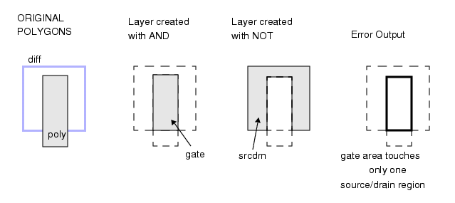

Other Rule Checks
This section
contains miscellaneous rule checks.
Gates that do not completely cross diffusion
bad_gates {
@ "Gates" where poly does not completely cross diffusion.
gate = poly AND diff // Gate regions.
srcdrn = diff NOT poly // Source/drain regions.
gate NOT TOUCH srcdrn == 2 // Must touch two src/drn regions.
}Acute angles, off-grid vertices, and skewed edges
flag_check {
@ Find acute angles, off-grid vertices, and edges which are
@ non-orthogonal or non-45
DRAWN ACUTE
DRAWN OFFGRID
DRAWN SKEW
}Polygons with an edge longer than 100 microns
// Find all metal polygons with at least one edge longer than 100 microns.
long_metal {
x = metal length > 100
long_metal_polygons = metal interact x
}Figure 1. bad_gates

Objects in holes of another layer
contacts_in_holes {
@ Select all contacts which are exactly in a hole of
@ diffusion:
X = holes diff // First find diffusion holes
Y = X inside contact
// Next pick contacts coincident with the holes
contact inside Y
}Figure 2. contacts_in_holes

Holes in a layer
closed_metal {
@ donut structures not allowed on metal layer
metal donut
}Wide metal that is not power or ground
CONNECT metal
FAT_METAL_NOT_POWER {
vdd_metal = metal net vdd
vss_metal = metal net vss
power = vdd_metal OR vss_metal
wide_met = SIZE metal BY -2 // Width <= 4 goes away.
fat_metal = SIZE wide_met BY 2
// Restore metal which did not disappear
fat_metal NOT power
//generate error output when fat metal is not vdd or vss
}Sub-cell perimeters inside that of the top-level cell
// ICrules only.
// Check that no sub-cell perimeter is outside that of the
// top-level cell:
perim_check {
// Cell perimeters are stored on a special layer called
// "perimeter" as objects having both internal and external
// aspect.
X = TOPEX perimeter // The perimeter of the top-level template
perimeter NOT X
}Gate alignment
non_aligned_gate {
@ Gates must be horizontal along the edge inside poly and
@ vertical along the edge inside diffusion. Flag gates
@ themselves not gate edges.
gate = poly and diff
gate_edge_in_poly = gate coincident edge diff
gate_edge_in_diff = gate not coincident edge diff
bad_angle_1 = gate_edge_in_poly not angle == 0
bad_angle_2 = gate_edge_in_diff not angle == 90
bad_gate_1 = gate with edge bad_angle_1
bad_gate_2 = gate with edge bad_angle_2
bad_gate_1 or bad_gate_2 // Kill duplicate errors.
}Length to width ratio
// check length-to-width ratio of chip
chip_too_long_or_wide {
chip = EXTENT
NOT RECTANGLE chip > min < max ASPECT 1 // chip must be square
}Pad metal to unrelated diffusion check
This will check pad metal to unrelated diffusion. Related diffusion is diffusion tied to pad metal. Unrelated diffusion is everything else.
//diff in this case is all diff you want to check.
//make copies of your present metals and vias so you
//do not mess up your connectivity.
cm1 = COPY met1
cm2 = COPY met2
cv = COPY via
CONNECT cm2 pad
CONNECT cm2 cm1 by cv
//In other words, all cm2 on the same net as pad
m2x = NET AREA RATIO cm2 pad > 0
m1x = NET AREA RATIO cm1 pad > 0
cx = cont INSIDE m1x //all contacts in m1x
//This is the unrelated diffusion.
checkd = diff OUTSIDE cx
pad2unrelated_diff_rule {
EXTERNAL checkd m2x < 5
EXTERNAL checkd m1x < 5
}Missing and conflicting Stamp
The missing connections Stamp means a polygon was found which did not get a Stamp by the naa or paa respectively. This may or may not be a problem depending on the polygon. The conflicting connection Stamp means the respective well (n or p) did not receive node numbers because different nodes are trying to Stamp the same object. This could very likely be a problem and you will want to find out why you have different nodes trying to Stamp the same object.
ywelln = nwell NOT cwelln
//identifies missing "n" connections
miss_n_conn { ywelln OUTSIDE nq }
//identifies confl. "n" conn.
conflict_n_conn { ywelln NOT OUTSIDE nq }
ywellp = pwell NOT cwellp
//identifies missing "p" connections
miss_p_conn { ywellp OUTSIDE pr }
//identifies confl. "p" conn.
conflict_p_conn { ywellp NOT OUTSIDE pr }Using Stamp to find floating gates
// This rule uses STAMP to find floating gates; that is, gates
// not connected to the output of another transistor.
// Connectivity must be established for the layout (this can
// be done using $extract_cell_connectivity in Pyxis Layout
layer poly 1
layer diff 2
layer metal 3
layer cont 4
connect diff metal by cont
// Above statement forces connectivity between diff and metal
// through a contact
floating_gate {
gate = poly AND diff
// above creates a gate layer with connectivity info of poly
metalcont = metal AND cont
// This step isolates metal contacts.
// The next step will establish coincidence of poly and metal
// contacts.Theoretically, you are only concerned with poly
// connected to metal, but isolating the metal contact insures
// you get only intended metal to poly connections rather than
// all intersections of metal and poly
connected_poly = STAMP poly by metalcont
// This step establishes coincidence of poly and metal
// contacts
gate NOT connected_poly
// This step yields the rule check output--gate area not
// intersecting connected poly.